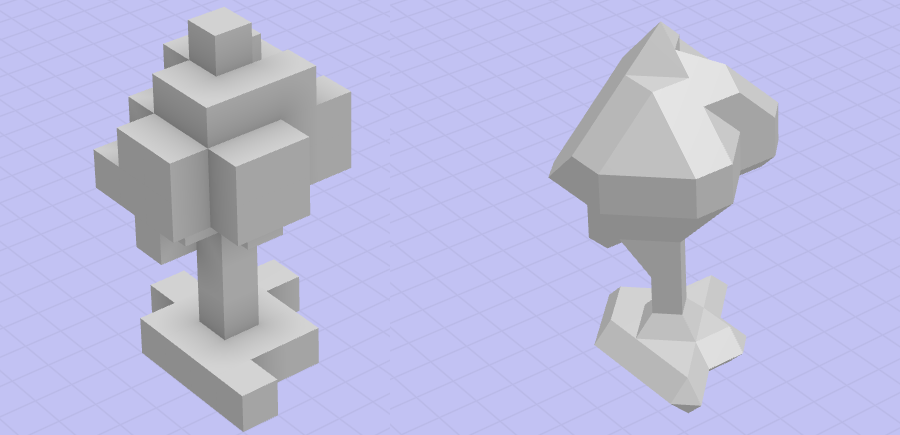
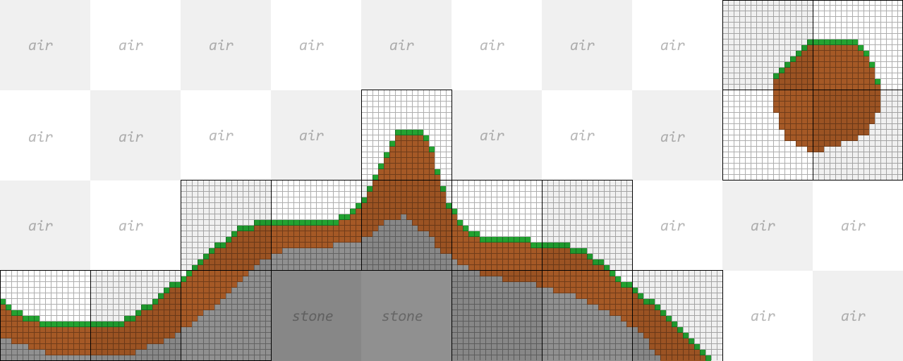
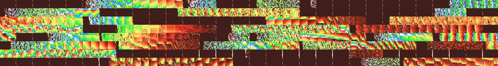
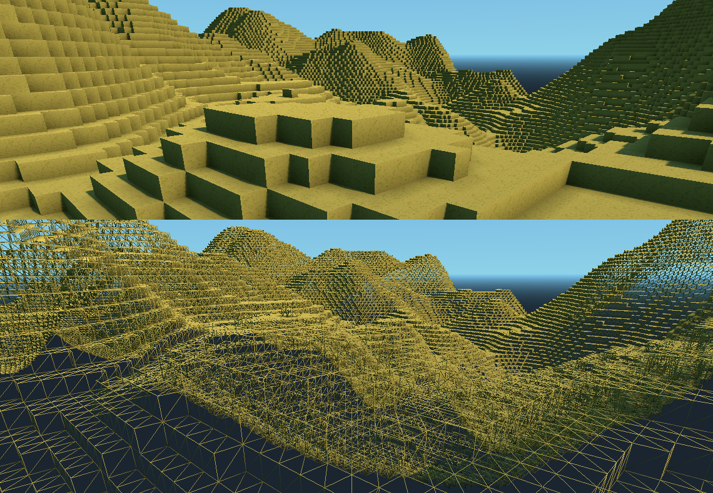
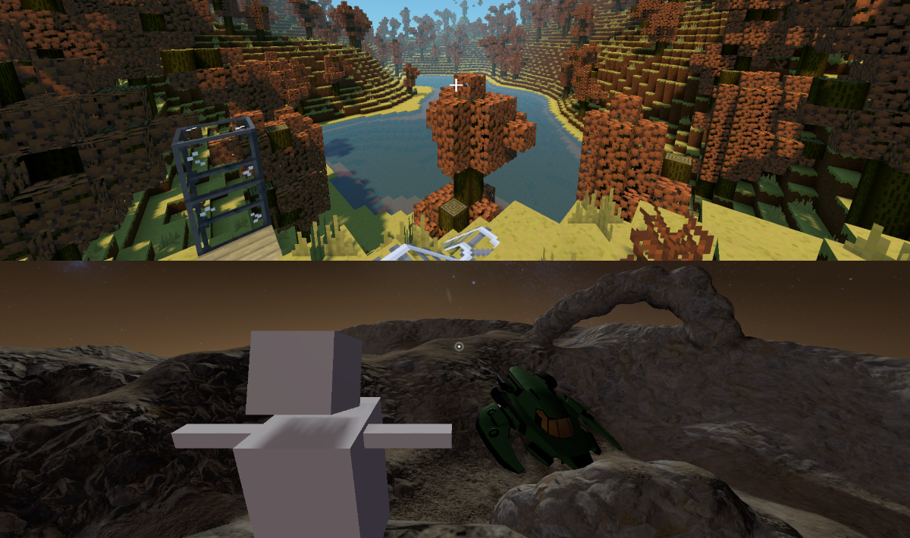

体素相关概念
本节介绍此体素引擎中使用的主要概念以及哪些部分实现这些概念。
什么是体素

“体素”是“体积图片元素”的缩写，类似于“像素”，意思是“图片元素”。它们组成体积，而不是简单的 2D 图像，这允许制作 3D 地形或 3D 模型。它们不像经典的基于多边形的模型那样仅表示对象的表面，还表示空间的每个点的内部。
在此引擎中，体素是空间中保存某些值的特定点。这些值可以是：
体素的类型
其密度（或符号距离）
体素可以通过在网格上手动确定其值或通过定义程序规则从任何位置生成体素（如分形噪声或符号距离字段公式）来获得。
注意
虽然这个引擎最初是作为生成地形的一种方式，但它并不是你可以用它做的唯一事情。因此，您经常会在本文档中找到“体积”一词而不是“terrain”，以指定由体素组成的对象。
生成体素
体素跨越 3 维，因此与图像相反，随着体积变大，存储它们可能会占用更多内存。这就是为什么考虑体素的程序源很重要的原因，因为它们不消耗任何内存，并且可以以任何分辨率访问。
此任务由派生 VoxelGenerator （体素生成器）的资源实现。他们的目标是在空间中的特定点或整个定义的体积中生成体素数据。生成模型、地形或行星的可能方法无穷无尽，我们不会在本节中详细介绍。
生成器的类型包括：
: 使用 2D 分形噪声生成高度图
: 使用3D噪声生成一个“海绵”世界，形成大型洞穴和悬垂物，经过修改，使大部分地形向下，仅成为某个高度以上的空气
: 生成一个简单的平面。
: 允许使用图形（如3D可视化着色器）组合各种操作，以产生比其他简单生成器更灵活的体积
: 允许使用脚本实现生成逻辑。可能会比其他选项慢，除非使用 C
或 GDNative。
存储体素

即使它需要大量内存，我们仍然必须在某个时候存储体素数据。这对于传递体素、存储无法使用生成器复制的玩家编辑或将地形保存到磁盘非常重要。
执行此操作的核心类是VoxelBuffer。这是一个具有可配置格式的简单网格数据结构。您可能不必经常使用此类，但了解它的存储概念对于使用其他 API 如 VoxelTool 很有用。体素可以保存各种值，因此此对象使用多个通道，每个通道都是一种类型的信息：
TYPE ：体素的类型，主要用于将体素与《我的世界》中的模型类型相关联。这与磁贴地图或网格图中的磁贴 ID 非常相似。
引擎使用第一个通道，而其他通道暂时未使用。每个通道还可以使用可配置的位深度：8、16、32 或 64 位。这允许根据您的需要调整质量和内存使用情况。最后，应用简单的优化，以便如果通道填充相同的值，它不会分配内存，而是只存储该值。这样，天空等区域就不会占用内存。
警告
有一个名为体素的类，但它实际上仅用于块状网格划分。它不是通用体素值，将来将重命名以避免混淆。
将体素保存到磁盘

当玩家对世界进行编辑时，或者当您想在编辑器中雕刻地形并保存更改时，有必要将体素保存到磁盘。
此模块通过 VoxelStream 实现此功能。与生成器类似，流允许请求体素块，因此无需一次加载整个内容。而且，它还允许发回体素块以保存它们。如果世界非常大，这种基于块的方法特别有用。相比之下，较小的卷可能只是一次加载所有卷。子类可以通过各种方式实现它，通常使用压缩文件。
将体素转换为网格

当今的显卡功能越来越强大，但平均而言，多边形（网格）仍然是渲染 3D 模型的最快方式。所以我们不会真的直接画体素。相反，我们必须将它们转换为多边形，然后进行渲染。为此，此引擎使用名为VoxelMesher的资源。
有几种方法可以从体素数据生成多边形，引擎提供了网格划分器类型来执行此操作：
体素网格立方体：
体素网格块：
VoxelMesherTransvoxel：
VoxelMesherDMC：
: 体素的颜色用于生成彩色立方体。这是多边形体素的最简单方法。
: 体素类型用于将与该类型对应的网格批处理在一起。这也可以使用立方体，但如果提供自定义网格，则任何形状都可以。这与 Minecraft 中使用的技术类似，并且具有广泛的选择。
: 这个不是制作立方体，而是使用SDF值来产生基于Transvoxel算法的光滑表面。它还可以生成过渡网格，这对于将两个不同细节级别的网格拼接在一起很有用。
: 使用双行进立方体产生光滑表面的变体，如这些文章所述。但是，不再维护此实现。
将其与节点放在一起

到目前为止，我们可以认为有足够的工具在游戏中使用体素。不过，从那里开始需要做更多的工作。
将一堆体素转换为网格对于模型或一小块土地是可以的，但是它不能很好地缩放大型可编辑地形。如果该地形需要具有较大的视野距离，则会变得更加棘手。通常，建议的解决方案是将其分成块，最终使用可变的细节级别，并在玩家修改该地形的部分内容时正确更新它们。这就是 VoxelTerrain* 节点所做的，通过将之前看到的工具放在一起，并使用线程在后台运行繁重的操作。
注意
在这个引擎中，“块”实际上被称为“块”。它们通常表示 16x16x16 体素的立方体。某些选项以块而不是空间单位指定。
引擎支持两种主要类型的地形：
VoxelTerrain：这个使用一个简单的块网格，并在观众四处移动时负责加载和卸载块。它的视角距离与 Minecraft 类似，因此最好与块状体素或中等大小的平滑体积一起使用。
VoxelLodTerrain：这个使用八叉树的块。与简单的网格相反，这允许在多个细节级别存储体素，从而允许渲染更大的距离。不过，它仅支持平滑体素，并且与其他体素相比具有不同的限制。
这两种地形都可以实时编辑，只有编辑的部分才会动态重新划分网格。帮助程序类 VoxelTool 向脚本 API 公开，以简化编辑体素的过程，可以使用方法 get_voxel_tool() 获取体素。它允许设置单个体素，挖掘或混合简单的形状，如球体或盒子。此 API 上提供了与前面看到的相同的通道概念，因此根据您使用的网格器类型，您可能需要编辑 TYPE 或 SDF COLOR 通道。
最后，要加载这些地形，需要在世界中至少放置一个体素查看器节点。这些通常可以作为玩家的子项或主 Camera .它们告诉体素引擎加载体素的位置、距离，并优先考虑它们附近发生的网格更新。